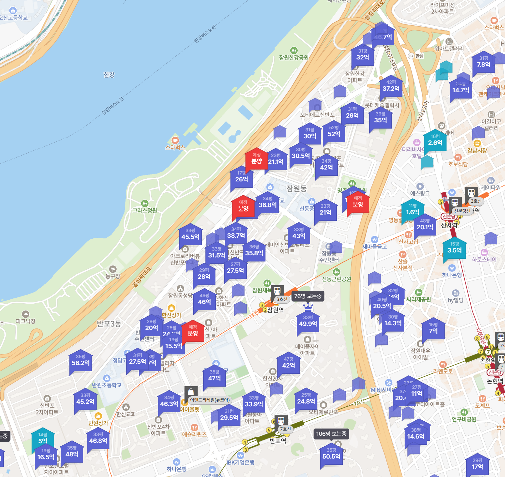

게임에서도 못모은 돈들이 현실에서 너도 나도 적혀있음

게임에서도 못모은 돈들이 현실에서 너도 나도 적혀있음
그리고 지금이 저점임
도봉구만가도 4억대 30평대도 많음
학군이 아니라서 그럼
이제 로또1등이여도 근처도 못감ㅋㅋ
뭐 꼭 저동네 살아야해?
잃어버린 박탈감을찾아서
메이플 ㄱㄱㄱㄱ
아직싸다 더 올라라
나 서울안살아!
아까 어느 게시물 17년 서울 지역마다 아파트가격나온거있었는데 그때도 10억 근처...
그래도 강남 잠실 이런곳만 아니면 4~6억대더라..
지금은 병점도 10억
그때샀으면 노후준비끝
11평 1.6억은 들어갈수있겠는데
만약 저게 월세라면? ㄷㄷ
11평이 월세 1억6천일수가없지
시그니엘도아니고 ;; 전세면 모를까
포기하면 편해. 굳이 저기 살아야함? ㅋㅋㅋ
개부자들 개많네 진짜
역시 메이플이야
문제는 저런 고인물지역 외에도 전반적으로 비싸다는 것
근로소득으로 평생 모아도 15억 모을 사람이 많지 않을거라 보이지만 서울 아파트 평균가는 16억 ㄷㄷ..
이제 근로소득만으로 구입가능한 범위는 지난지 오래고
천룡인급 수입이 아닌이상 웬만한 사람들은 타고난 수저색에 따라 매수 가능여부가 갈리겠지
대부분은 대기업 부부 + 부모 버프
부도 세대를 거듭할수록 쌓이니까..
15년간 직장다닌 거 세전월급다더했더니 8.5억 나오더라 ㅋㅋ
서울에서 제일 비싼 동네 갖다놓고 비싸다하면 어쩌라는거. 살아보면 집에 햇빛도 제대로 안들걸?
저 집들이 다 주인이 있다는게 더 놀랍지 않냐....???
우리나라 부동산은 현제가치보다 미래 가치가 더 중요한거 같음
그렇지않은 부동산이 있음??
옆나라 일본 도쿄보다 비싼게 맞냐?
도쿄도 중심지 고급 멘션(한국 아파트와 비슷한 포지션)은 저 가격 아닌가
도쿄에도 비싼곳 많지만 개별 건물이 비싼거지 한국처럼 반포, 강남 이런식으로 무식하게 특정 구 전체가 저 모양은 아님
솔직히 강남 집값을 잡아야 할까? 판교나 하나더 만들생각해라 이말이야
와.. 그사세네
그냥 포기하게 만드니 오히려 편하다